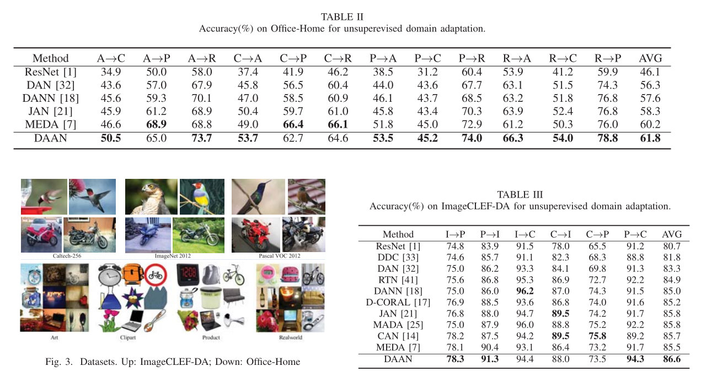

简介
通常，我们在一个特定领域利用监督方式训练的模型，当用于一个新场景的时候，由于两个域之间的样本特征分布存在差异，表现会有所降低，域自适应就由此提出以提高模型的泛化能力，同时不用继续采集目标域的样本进行标注，减少成本。

Transfer Learning with Dynamic Adversarial Adaptation Network
论文：http://jd92.wang/assets/files/a16_icdm19.pdf
github：https://github.com/jindongwang/transferlearning/tree/master/code/deep/DAAN
摘要
深度转移学习的最新进展表明，对抗性学习可以嵌入到深度网络中，以学习更多可转移的功能，从而减少两个域之间的分配差异。现有的对抗域自适应方法要么学习单个域标识符以对齐全局源和目标分布，要么注意基于多个标识符对齐子域。但是，在实际应用中，域之间的边际（全局）分布和条件（局部）分布通常对适应做出不同的贡献。当前没有方法可以动态地和定量地评估这两种分布对对抗学习的相对重要性。在本文中，我们提出了一种新颖的动态对抗适应网络（DAAN），可以动态学习域不变表示，同时定量评估全局和局部域分布的相对重要性。据我们所知，DAAN是进行深度对抗学习的动态对抗分布自适应的首次尝试。 DAAN非常易于在实际应用中实施和培训。我们从理论上分析了DAAN的有效性，也可以在注意策略中进行解释。大量实验表明，与最先进的深度和对抗方法相比，DAAN具有更好的分类准确性。结果还暗示了动态分布适应在对抗转移学习中的必要性和有效性。
在本文中，我们提出了一种用于无监督域自适应的新型动态对抗自适应网络（DAAN）。 DAAN能够通过端到端对抗训练来学习领域不变特征。 DAAN中的关键组件是动态对抗因子，它能够轻松，动态和定量地评估边际和条件分布的相对重要性。可以通过随机梯度下降（SGD）以及线性时间中反向传播计算出的梯度来实现自适应。 据我们所知，DAAN是第一个能够动态学习边际和条件分布之间关系的对抗域适应方法。 广泛的实验表明，DAAN在标准域适应基准上的性能优于最新方法。 更重要的是，它表明确实存在两个分布的相对重要性，DAAN可以对其进行准确评估。
